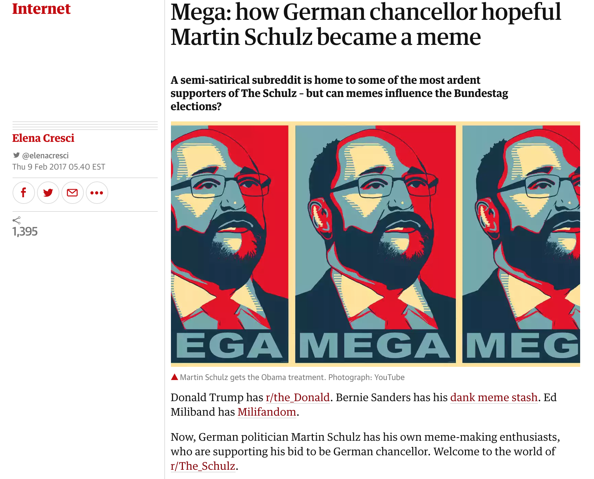
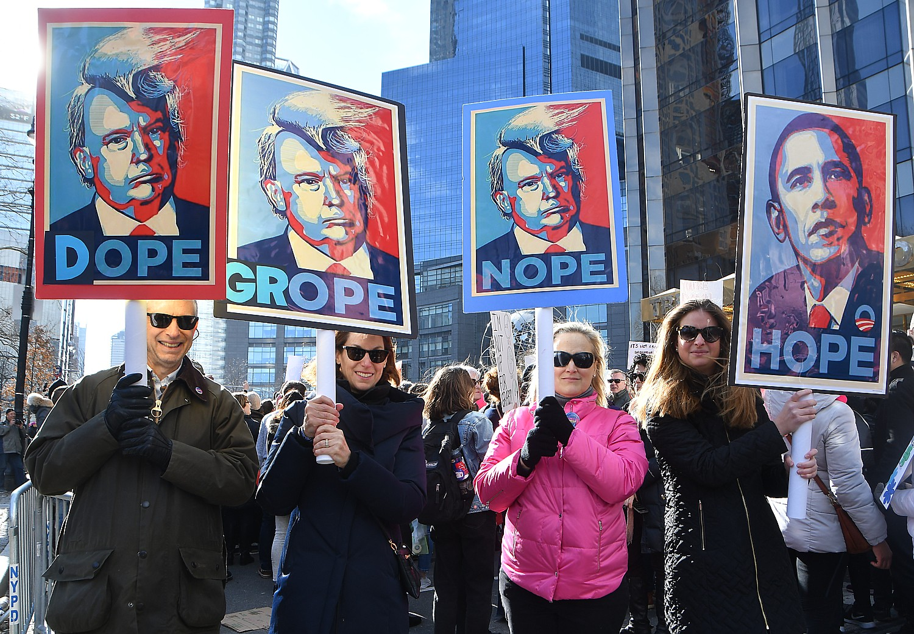
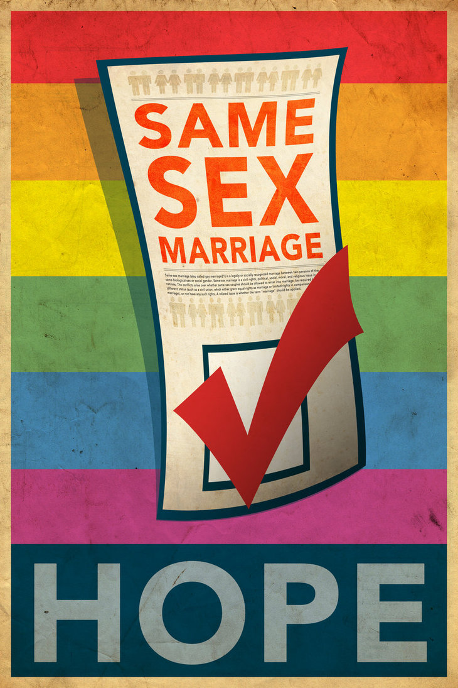
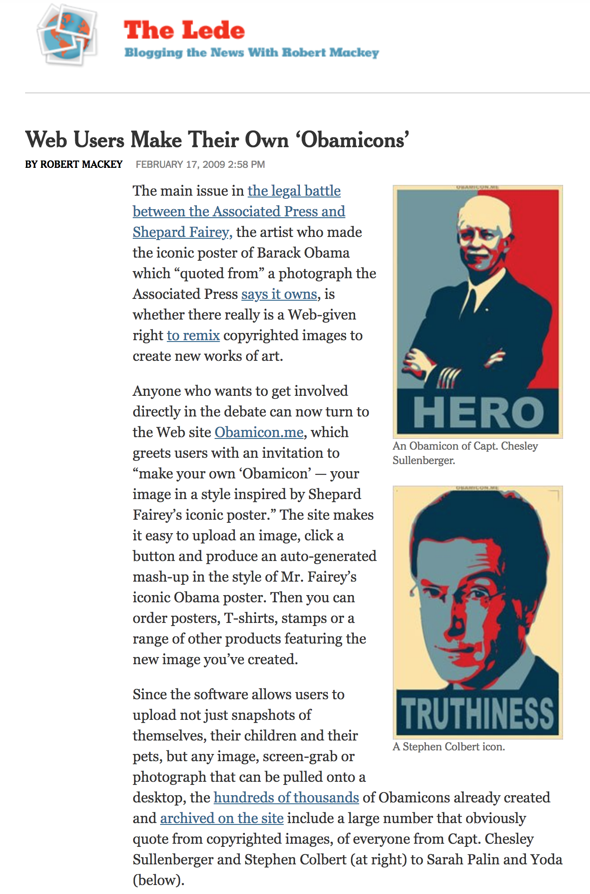
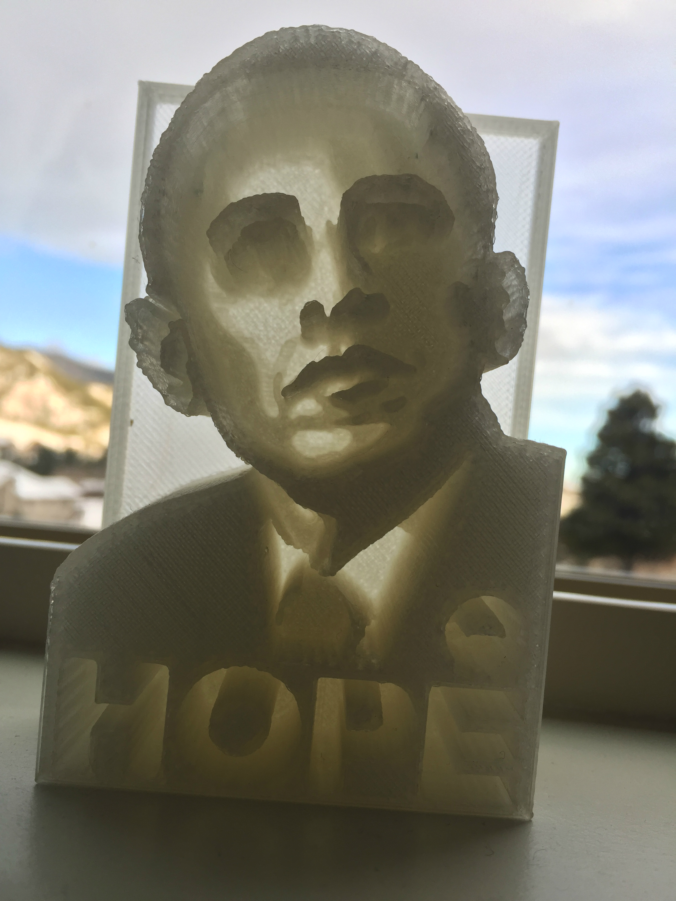
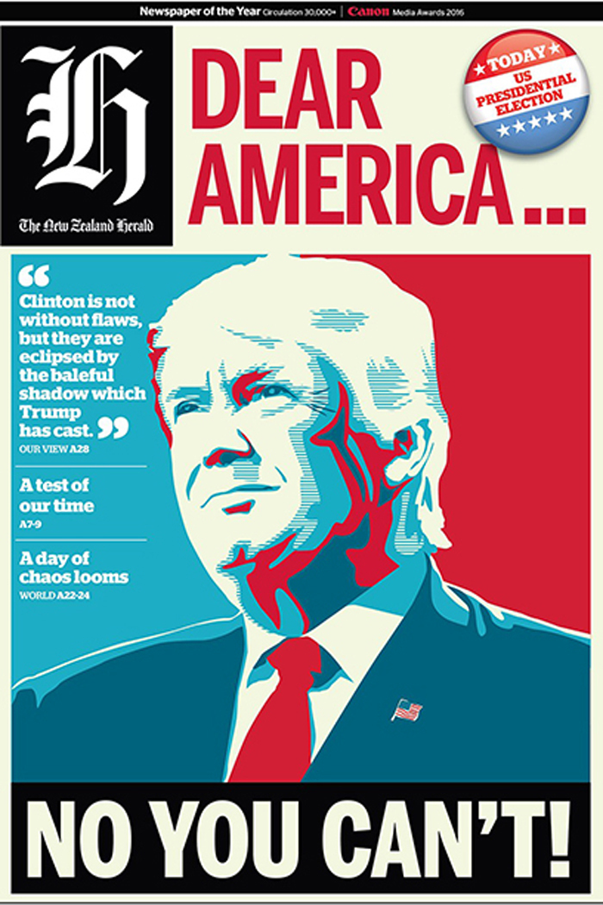
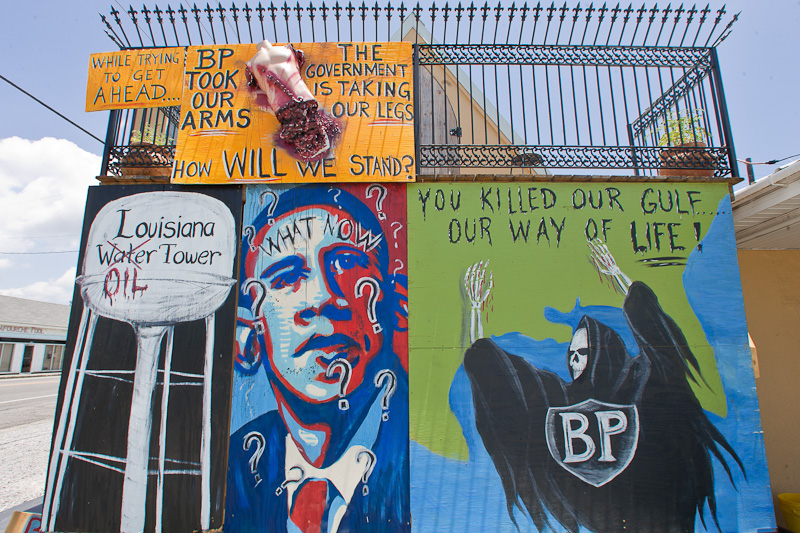
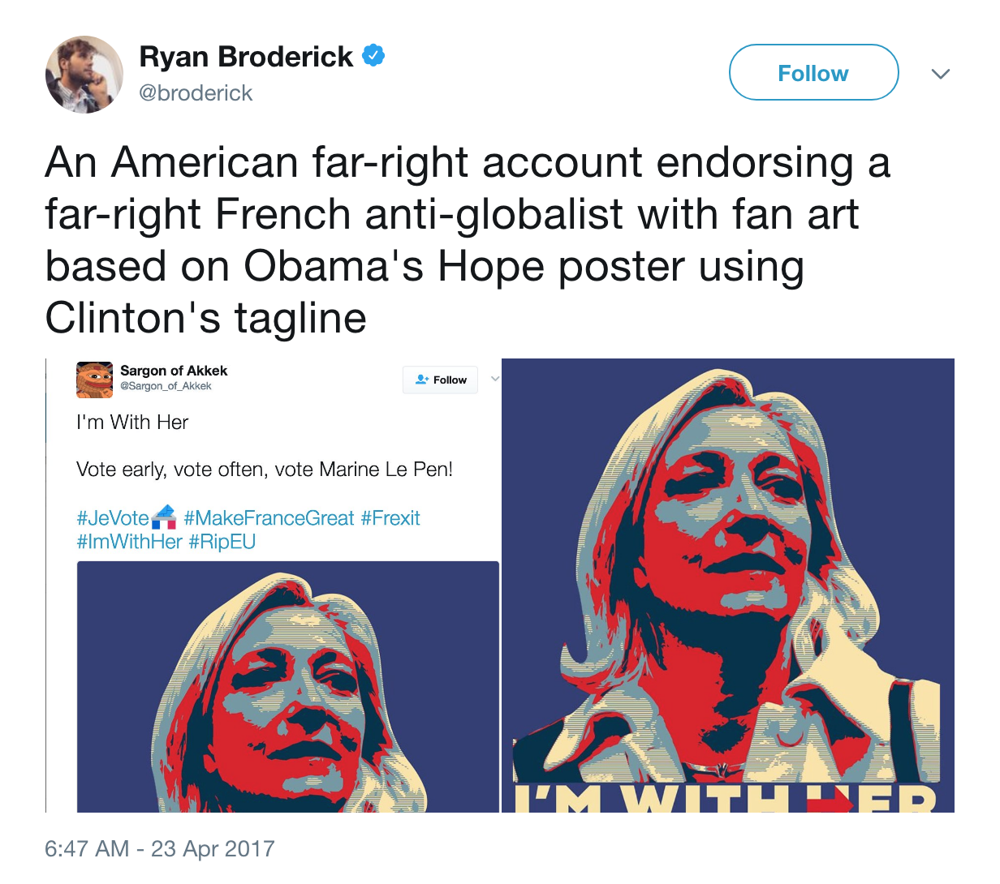

Working Assumptions
Investigating Digital Visual Phenomena and Preserving Digital Visual History
In order to make our shared scholarly efforts as transparent as possible, we work here to identify the governing commitments and assumptions that guide our collaborative efforts. Most obviously, digital visual studies (henceforth referred to as DVS) is committed to studying artifacts that are either born digital or become digitized and to generating new approaches for studying how such digital visual phenomena are shifting public participation and impacting collective life. While we acknowledge that a wide array of digital-visual objects may be appropriate for study (digital political art, digital archives, digital advertisements, video games, etc.), in this collection, we take as our object of study the now iconic red, white, and blue digitized version of Obama Hope.
Figure 3.
This image was first captured in 2006 by Mannie Garcia in a digital photograph that circulated minimally in news photos on various online websites (see Figure 3). In 2008, Shepard Fairey found Garcia’s photograph in a Google Image Search and then, using Photoshop and other digital technologies, transformed it into the “Faireyized” version that become widely recognized during Obama’s first presidential election season. As my four-part case study in Still Life with Rhetoric details, this image experienced not only viral circulation but also viral transformation as citizens from all over the world appropriated and reappropriated it for various individual reasons and collective causes—a phenomenon that, as many chapters in this collection make evident, has not ended (see Figure 4). As such, Obama Hope is an image that has a complex rhetorical history and much to teach us about not only how new media images circulate, transform, and impact collective life but also how emergent technologies, cultural practices, and human thoughts and actions feed into such phenomena.
Figure 4.
In her chapter for this collection, “From Hope to Drumph,” for instance, Laurie expands her previous research by exploring how the Obama Hope image continues to make an impact in popular culture and political history in the United States as it manifests in a proliferation of Trumpicons that serve a variety of political and cultural functions (see Figure 5). Making use of digital visualization techniques first introduced in “Mapping Obama Hope: A Data Visualization Project for Visual Rhetorics,” she specifically demonstrates how iconographic tracking can help account for what she calls rhetorical fluctuation—the spatio-temporal flux that discourse experiences as it waxes and wanes in terms of aesthetic, political, and cultural significance. Such accounting is especially important, Laurie argues, in order to explicate how it is that an ephemeral new media artifact such as Obama Hope can continue to be rhetorically reliable in participatory culture despite its decelerated acceleration.
Figure 5.
Blake Hallinan’s chapter reminds us that when it comes to digital images, such visual research is often time-sensitive. Due to planned obsolescence, link rot, and problems with the durability of media, many of the digital technologies and related new media practices that fuel certain contemporary civic participation will fade from popular practice before we have a chance to fully investigate them. As Alexander Stille has noted, “[A]s the pace of technological change increases, so does the speed at which each new generation of equipment supplants the last” (301-302). “In fact,” Stille explains, “there appears to be a direct relationship between the newness of technology and its fragility” (302). As evidence, he cites the research of Paul Conway, a Yale University librarian, who has produced a digital graph dating back to ancient Mesopotamia illustrating that “while the quantity of information being saved in the digital era has increased exponentially, the durability of media has decreased almost as dramatically” (302). Such phenomenon is an especially important concern for digital visual studies in that another commitment of digital visual studies is to preserve digital visual history so that we can keep record of the digital technologies, new media practices, and digital visual artifacts that make civic participation and collective action possible in our contemporary era.
In this collection, we offer two methodological approaches to help achieve this goal. First, we offer links to two different digital archives documenting the rhetorical life of Obama Hope. The first, titled The Obama Hope Archive, builds off a boutique data set Laurie constructed that contains over 1000 pictures in which Obama Hope has surfaced since 2008. As Cheryl Ball, Tarez Graban, and Michelle Sidler explain, a boutique data set gives name to smaller data sets, based on quantitative and qualitative research, that have proven useful to individual scholars' own research projects but currently are inaccessible to other researchers (5). DVS advocates for publicizing boutique data sets of digital visual artifacts not only so that other scholars can draw on these data sets for their own research but also to ensure that digital artifacts and their related rhetorical activities are preserved before disappearing from the World Wide Web. As part of Laurie’s and Hallinan’s contribution to this collection, we thus offer this link to The Obama Hope Archive, which was produced and hosted with Omeka.com.
Sarah Beck, author of “Pinning Hope,” has also generated a smaller digital archive documenting a visual history of Barack Obama’s relation to LGBT issues during his presidency (see Figure 6). Beck argues that using social media such as Pinterest can be a viable way to queer digital archives and document queer history. While The Obama Hope Archive was generated via Omeka.com, a software specifically designed for digital archives, we applaud Sarah’s creative use of Pinterest to produce her own digital archive, especially in that such exercise is a useful means for generating a boutique data set that quickly makes visible patterns and anomalies in visual data. Lev Manovich, of course, has gone to great lengths to produce ImagePlot to make content pattern recognition with large data sets possible—efforts I have tried to enhance by developing different digital visualization techniques that can help identify patters in circulation, genre diffusion, and rhetorical function (see Gries 2017). But while we certainly encourage scholars to use ImagePlot and digital visualization techniques, we also believe that especially when it comes to dealing with small data sets, digital picture boards can be an adequate means for pattern identification of content. In addition, of course, Pinterest picture boards are widely accessible to a public audience, which, as Beck argues, is important for making queer history, which often goes unaccounted, more visible.
Figure 6.
In addition to producing digital archives to preserve digital visual history, digital media archeology-- as Hallinan’s chapter “Digging Up Obama Hope” demonstrates--can be a productive means for excavating digital technologies and associated media practices that were once active in cultivating for visual culture but have since faded out of contemporary use. In her chapter, Hallinan relies on infrastructural inversion (Bowker and Star 1999) and the Wayback Machine to recover the Obamicon.me website that made possible the production and sharing of Obamicons, which are largely responsible for the Obama Hope image’s broad circulation and surrounding metaculture in 2009 (see Figure 7). While this website was easily accessible and wildly popular for 2 years, its inventors, Paste Magazine, took down the website, cutting off what had become a popular means of civic engagement for many citizens not only in the U.S. but also the world. Digital visual studies is committed to investigating and documenting such ephemeral modes of civic action so that digital visual history can be properly preserved, and Hallinan’s chapter demonstrates how digital media archaeology can be a valuable approach in achieving such goals.
Figure 7.
Producing Digital Visual Artifacts as a Research Practice
In addition to investigating digital visual phenomena and preserving digital visual history, DVS is committed to digital-visual production as part of the research and theory-building process. Such commitment aligns not only with digital rhetoric but also with critical making--what Matt Ratto calls a connection between two typically disconnected modes of engagement with the world: critical thinking--typically understood as conceptual work grounded in linguistics--and making--goal-based work grounded in socio-material-technical practices (252-260). To be expected, then, digital visual studies does not envision digital research methods, tools, and emergent digital products as divorced from the abstract practice of theory making. Instead, we agree with Roger Whitson (2013) that the digital enters into a recursive and creative relationship with the cognitive, discursive practice of doing theory. In common parlance of the digital humanities, the hacking that entails the adaptation, manipulation, and productive use of a given digital technology merges seamlessly with the yacking of theorizing to develop new knowledge about visual phenomena.
Such commitment to digital visual production also aligns with practice-based research, which advances knowledge partly by means of creative practice. Practice-based research—commonly referred to as “research-creation” in Canada, “practice as research” in Britain and Australia, and “arts-based research” in the United States—typically integrates creative design, experimental aesthetic practices, and artistic works as integral to the research process (Chapman and Sawchuk 5-6). In fact, such creative acts and artifacts are necessary for both research and research-generated-knowledge to emerge. With practice-based research, such creative acts and artifacts are an especially productive means for answering a research question and generating research insights that can be documented, generalized, and theorized (Smith and Dean 7). Deploying artistic and experimental practices as a key component of the researcher’s process also enables scholars to explore and analyze the relationship between technology and visual culture, understanding that technology is not simply a tool for creation but also “a mind-set and practice of crafting” (Chapman and Sawchuk 19). Due to such affordances of practice-based research, we think this research approach is especially crucial for DVS in order to fully understand how digital visual creation can fuel not only our own visual methodologies and theories but also civic participation.
In this collection, several authors engage in critical making and practice-based research, and through their work, exemplify why they are useful for generating new knowledge about and applications of visual studies. Shannon Butt’s work in “Making Hope,” for instance, demonstrates how adding a tactile element to images such as Obama Hope via 3-D printing can accommodate alternative ways of seeing and knowing (see Figure 8). Working at the intersection of visual rhetoric and disability studies, Butts specifically shows how printing a tactile, material portrait of Obama enables users to touch, feel, and see how measured elements such as color, light, slope, or density shape what we experience as sight. We believe such work is especially important in that, as Butts explains, through computer aided design, scholars can begin to explore how 3D printing translates visual data into topographical, printable interfaces that offer hands-on experiences with art and digital discourse - the embodiment of digital theory through material practice. Kyle Bohunicky, on the other hand, models how glitch studies, as a form of critical-creative play and arts-based creation, can enrich our understanding of visual media. Bohunicky specifically makes use of aleatory procedures (Vitanza 2000) to generate visual anagrammatics and cool glitches, a process through which, he argues, we can develop a deeper understanding not only about digital images’ dynamic qualities but also their critical interventional possibilities in the civic arena.
Figure 8.
Contemporary research with augmented reality (AR) also demonstrates how digital visual creation can be a valuable means of both research and civic engagement. In their introduction to Augmented Reality: Innovative Perspectives Across Art, Industry, and Academia, Sean Morey and John Tinnell succinctly explain what AR entails by elucidating how AR browsers such as Aurasma, Layar, and Wikitude take advantage of smartphones’ camera view to “create a unique visual-tactile interface that blends a person’s gaze of the physical environment with texts, graphics, and other media files that have been “geotagged” to specific coordinates on the Earth’s surface.” In addition, they explain how computer vision and image tracking software are now commonly built into AR browsers, “creating a more precise mode of aligning digital overlays on top of print media, building facades, signage, and other fixtures of the built environment.” In light of these advancements, they insist, the potential for AR applications to enhance education, tourism, and cultural heritage, among other fields of business and design, is quite promising. DVS is especially excited about AR’s promise because it holds the potential for upending the very nature and function of visual digital interfaces as we know them.
While the theoretical possibilities are immense for this work, AR technologies also provide pragmatic applications that enhance both visual studies research and direct participation in public life. While Morey and Tinnell have both modeled such potential in their work with digital monuments and digital museum exhibits, artists and activists working as part of the Manifest AR collective have been creating “interventionist” augmented reality art since at least 2010. During the Occupy movement, for instance, artist Will Pappenheimer created an AR application that uses text from Occupy protester’s signs to generate digital skywriting that is viewable through a free mobile app. Contributing author Jacob Greene has also co-created an AR app that allows visitors of SeaWorld to learn about the hazards of marine captivity that often go on behind the scenes of this entertainment park. Such design, Greene argues, is especially important for generating alternative perceptions about contested places that can help intervene in ongoing problematic cultural practices. For his chapter in this collection, “Remixing Hope,” Greene models how AR can also be a useful means of analyzing and producing counterpublic remixes of the Obama Hope image—a popular remix practice that only continues to play a commentary role in national and international politics (see Figure 9). Through his own critical making practices, he particularly demonstrates how mobile AR can counter what he calls “rhetorical isotropy,” a term used to describe the ways in which public images take on monolithic meanings and associations that could potentially elide more nuanced interpretations of their socio-rhetorical function. In doing so, Greene argues that and models how AR remixing can enrich avenues for rhetorical invention in the physical spaces of everyday life, especially as an emerging mass of mobile device users continue to explore the possibilities of augmented reality as a technology for public writing.
Figure 9.
Inventing Digital Research Strategies and Presenting Research Digitally
While DVS is invested in visual studies’ applicable values for theoretical production and public intervention, DVS is also committed to inventing digital research strategies to both generate and publish knowledge for visual studies. Surely in this day and age, all research methods deploy digital technologies in some way—whether that entails using Google search to locate secondary research about a particular visual artifact or communicating with artists or designers via Skype to conduct a qualitative interview. DVS pushes beyond such nominal uses of technology to experiment with and sometimes invent new research approaches that are predominantly dependent on digital technologies.
For instance, while all the digital visual studies introduced in this collection heavily rely on digital technologies to collect, produce, and/or analyze data, Harry Archer and Emma Collin’s chapter makes evident how the invention of digital research strategies has potential to yield productive insights about visual practices that unfold in difficult-to-access places. In their chapter “Geolocating Obama Hope,” Archer and Collins forward what they call virtual geosemiotics to study the context-dependent meaning of Obama Hope murals that have surfaced in two different locations across the world (see Figure 10). Virtual geosemiotics draws on on visual semiotics and place semiotics and utilizes geo-spatial technologies (GST) such as Google Earth to enhance our understanding of how place contributes to the meaning of visual artifacts. While the spatial humanities have been quick to put digital tools such as Google Earth and Google Maps to work, Archer and Collin’s work makes evident that GST and the practice of geotagging across platforms can also be useful to visual studies, especially for investigating how visual artifacts are shaped by their emplacement in specific locations.
Figure 10.
Methodological invention is also at play in “Where is Obama Hope Now,” a chapter in which Aaron Beveridge introduces a digital research method called macroscopic rhetorical analysis, which he enacts to study how the conversation about Fairey and Obama Hope has changed and transformed in the ten years since its initial delivery (see Figure 11). This digital research method not only relies heavily on web scraping to collect tweets from Twitter’s API using a software called MassMine that Beveridge co-designed and developed but also text mining to analyze the tweets as well as data visualization to visualize the findings. We believe that cultivating such digital research methods is especially important so that writing and rhetoric scholars can remain relevant as “Big Data” and the visual display of information expands in its pervasive influence over politics and popular culture--in everything from data journalism to the “trending” lists displayed on social media apps.
Figure 11.
All of this inventional work, we argue, is made even more visibly important when we present our research and arguments in digital form. In fact, another assumption of DVS is that digital visual research is enhanced through digital delivery. Digital scholarship has long been at the forefront of scholarly discussion, with more and more journals offering digital publication options. Too many digital publication outlets, however, remain married to the traditional academic essay form, with options to simply embed digital pictures, video, and audio of the object/phenomena under study. The chapters in this digital collection, on the other hand, use genres of digital delivery (data visualizations, AR Apps, digital archives, etc.) to facilitate research for the author and create an interactive experience for the reader so that meaning-making can be as co-productive as possible. We especially do so because when it comes to digital visual studies, content and delivery cannot be so easily divorced. They are mutually productive of both the research process and any research findings that may come to bear.
In order to make this digital book as interactive as possible, we have carefully designed each chapter with what we hope are transparent means of tactile reader-text engagement. Whether you toggle data visualizations, follow images on Google Earth, watch tutorial videos, or access augmentations through AR, we ask that you dive into play during the reading process in order to both learn more about the author’s research processes and methodologies but also to activate your own meaning-making processes. Admittedly in this collection, the necessity and expectations for reader interaction varies. In his chapter “Reappropriating Hope,” for instance, readers cannot access Jacob Greene’s remixes to fully understand his creative research process and argument without holding a phone to the screen to access AR. In her chapter “Pinning Hope,” on the other hand, Sarah Beck embeds a Pinterest board and simply invites readers to scroll through her archive in order to discover for themselves the patterns and anomalies that emerge in her digital archive. We argue that no matter their interactive extent, the affordances of each presented methodology are enhanced through digital interaction. We invite you, then, to indulge in interaction with the contributing authors’ experimentations made possible through digital delivery.
Next Section